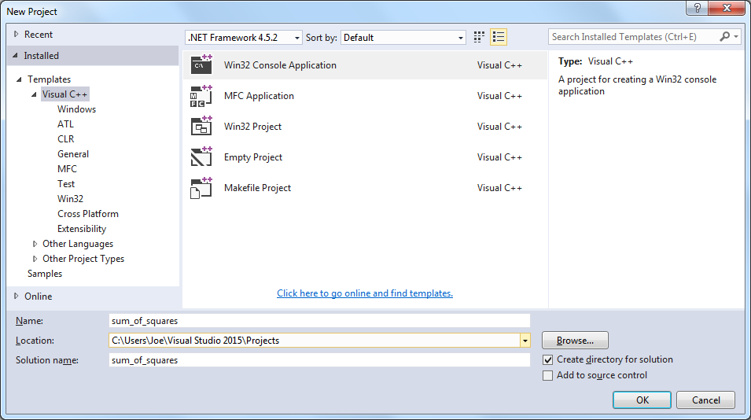
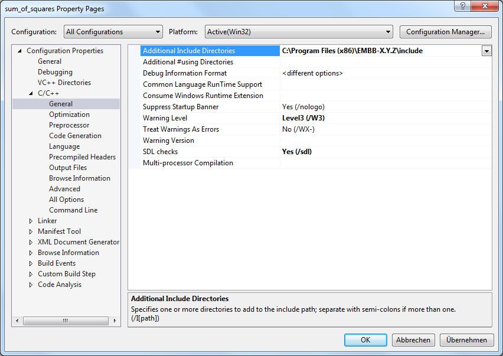
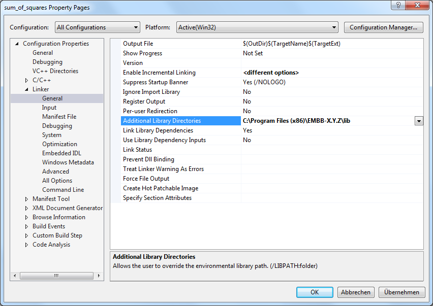
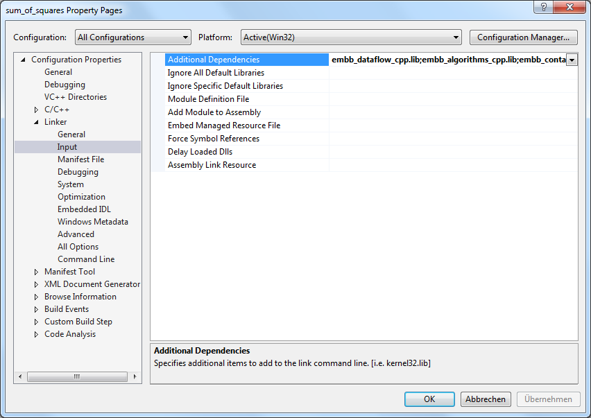

doc/examples or the tutorial application (doc/tutorial/application) after EMB² has been installed. If you want to use EMB² for an application built with CMake, have a look at the README.md file which explains how to easily integrate the library into your build process.
sudo apt-get install cmake
tar xfz embb-X.Y.Z.tar.gz
build and change to it:cd embb-X.Y.Z
mkdir build
cd build
cmake ..
cmake --build .
binaries/run_tests.shNone of the tests should fail.
/usr/local):
sudo cmake --build . --target install
sum_of_squares.cpp. Note: For simplicity, we are using C++11 although EMB² can also be used with C++03. Please make sure that you have a recent compiler installed.g++ -O3 -Wall --std=c++11 sum_of_squares.cpp -o sum_of_squares -lembb_dataflow_cpp -lembb_algorithms_cpp -lembb_containers_cpp -lembb_mtapi_cpp -lembb_mtapi_c -lembb_base_cpp -lembb_base_c -lpthreadNote: For the sake of generality, we link all libraries provided by EMB², not only the required ones.
./sum_of_squaresYou should get something like this:
Result: 1.00744e+23Note: The result may vary due to rounding errors, and the runtime of course depends on the processor speed as well as the number of cores. You may increase or decrease
Runtime: 85 ms
vector_size to get acceptable but not too short runtimes (if the vector is too large, you will get a bad_alloc exception).
Reduce (lines 25-30) with a simple loop:
{% highlight cpp %}
double result = 0.0;
for (double x : vec)
result += pow(x, 2.0);
{% endhighlight %}
unzip embb-X.Y.Z.zip
build and change to it:cd embb-X.Y.Z
mkdir build
cd build
cmake -G "Visual Studio 14 2015" ..Note: Make sure that you specify the correct version of Visual Studio. A list of supported CMake generators can be displayed by typing:
cmake --helpIn the following, we will assume a 32 bit configuration (64 bit are handled similiarly).
cmake --build . --config ReleaseNote: As opposed to a Linux build, the type [Release|Debug] has to be specified explicitly.
binaries\run_tests.batNone of the tests should fail.
C:\Program Files\embb-X.Y.Z\ or C:\Program Files (x86)\embb-X.Y.Z depending on the architecture):
cmake --build . --target install --config ReleaseNote: In case of errors, you probably did not run the developer command prompt as administrator.
sum_of_squares, and click OK:
sum_of_squares.cpp.C:\Program Files (x86)\EMBB-X.Y.Z\include to the Additional Include Directories field:
C:\Program Files (x86)\EMBB-X.Y.Z\lib to the Additional Library Directories field:
embb_dataflow_cpp.lib; embb_algorithms_cpp.lib; embb_containers_cpp.lib; embb_mtapi_cpp.lib; embb_mtapi_c.lib; embb_base_cpp.lib; embb_base_c.lib; to the Additional Dependencies field:

Note: For the sake of generality, we link all libraries provided by EMB², not only the required ones.Result: 1.00744e+23Note: The result may vary due to rounding errors, and the runtime of course depends on the processor speed as well as the number of cores. You may increase or decrease
Runtime: 936 ms
vector_size to get acceptable but not too short runtimes (if the vector is too large, you will get a bad_alloc exception).
Reduce (lines 25-30) with a simple loop:
{% highlight cpp %}
double result = 0.0;
for (double x : vec)
result += pow(x, 2.0);
{% endhighlight %}
Reduce function which is part of the algorithms namespace. Similar to std::accumulate, this function takes as arguments the input range, the neutral element w.r.t to the performed operation (initial value), and the operation itself (reduction function). Moreover, it takes a transformation function which is applied to each element before the actual reduction takes place. Internally, Reduce splits the input range into blocks which are processed in parallel by the task scheduler. Hence, there is no need to care about thread management and synchronization.